お金のこと
少しずつで、
街はよくなる。
毎月の会費が、街灯の電気代・お祭り・公園の手入れに。資源回収などの収益も、町内の運営に役立っています。
SMALL SUPPORT, BIG DIFFERENCEHELLO, FURUE! 広島市西区・古江
顔見知りが増える。街が、もっと好きになる。
お祭りも、子育ても、いつもの安心も。
ご近所とつくる毎日、はじめませんか。
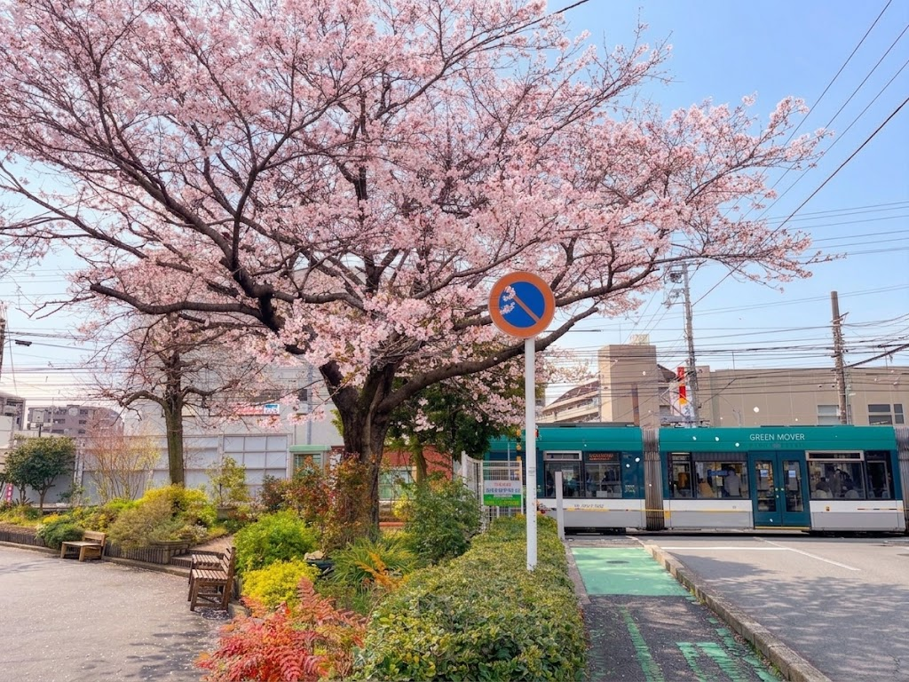
01 / ABOUT OUR TOWN
住んでいる街から、
つながっている街に。
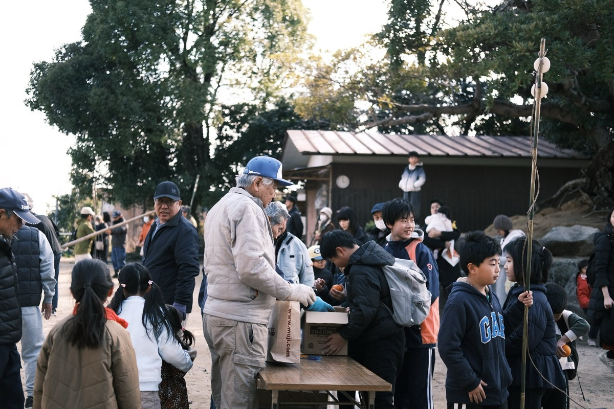
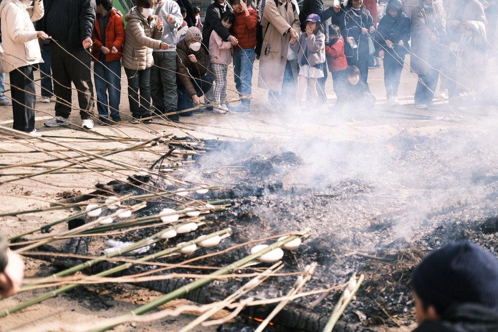
街灯がともる。公園がきれい。お祭りで、顔見知りに会う。そんな古江の“あたりまえ”を、住む人みんなの少しずつの力で支えているのが町内会です。
いま、加入する人や担い手が少しずつ減っています。子育て世代も、高齢の方も、これからも安心して暮らせる街に。もしものとき、そばで助け合える街に。
この街のいいところを、いっしょに続けていきませんか。
古江町内会連合会
EVERYDAY, EVERYONE.
夜道を照らす防犯灯の電気代、防災の備え、地域のイベント。町内会費は、古江に暮らすみんなの毎日を支えるために使われています。
02 / GOOD THINGS
町内会のいいところ。
あなたの毎日にも、きっとあります。
毎月の会費が、街灯の電気代・お祭り・公園の手入れに。資源回収などの収益も、町内の運営に役立っています。
SMALL SUPPORT, BIG DIFFERENCE街灯が切れた、道路が傷んだ、遊具が壊れた。身近な困りごとを地域でまとめて、行政に届ける窓口になります。
YOUR VOICE, OUR TOWN夏祭り、餅つき、盆踊り。季節のイベントが身近にあるうれしさ。子どもも大人も、顔見知りが増えるきっかけに。
MORE FUN, CLOSE TO HOME赤ちゃんがいる家、高齢の方のいる家。ご近所を知ることが、いざというときの助け合いに。安否確認名簿や防災倉庫も備えのひとつです。
KNOW EACH OTHER, HELP EACH OTHER町内会費は、いわば「街の管理費」。
みんなの少しずつが、暮らしの安心につながります。
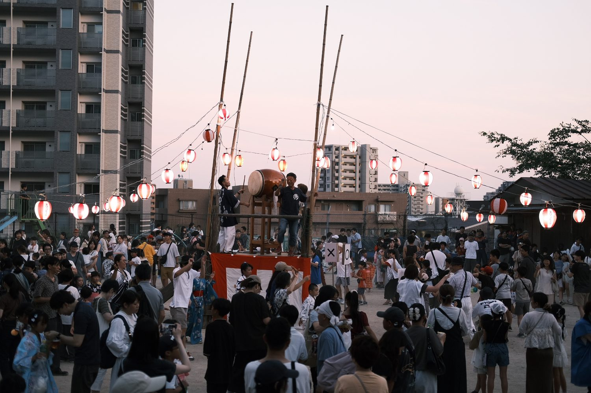
いつもの街が、
忘れられない夏になる。
03 / MEMBERSHIP
いつもの安心も、楽しい思い出も。
少しずつ持ち寄って、続けていこう。
※ デモ表示の会費です。
実際の金額は、担当の町内会にご確認ください。
年払い 1,200円（デモ表示）
YOUR WAY TO SUPPORT FURUE
「街のために、少しなら力になりたい」。
その気持ちから、はじめてみませんか。
マンション単位では町内会に加入していない、役や当番の負担が気になる。そんな事情があっても、街を応援したいというお気持ちをお聞かせください。
「年1,200円ほどなら、古江のために」と考えている方も、ぜひご相談ください。お住まいの地域でどんな参加方法があるか、担当の町内会と一緒に考えます。
加入・参加について相談する※ 会費・加入方法・役割は町内会によって異なります。年1,200円はサイト上の参考額です。
紙の回覧板が不要な方は、加入・お問い合わせフォームからお知らせください。地域の回覧板のお知らせや行事情報は、エルモ古田のLINE公式からも確認できます。
LINE公式を開くABOUT ELMO FURUTA
古田地区の社会福祉協議会、町内会、子ども会、体育協会などが一緒に活動する地域の組織です。楽しいイベントを企画・運営し、地域の課題にも取り組んでいます。
04 / OUR NEIGHBORHOODS
あなたの町内会は、どこですか。
NISHIMACHI
子ども会あり
SHINMACHI
子ども会あり
HIGASHIMACHI
子ども会あり
UE 1
UE 2
TAGATA
古江と田方、6つの町内会をご案内します。
お住まいのエリアがわからないときも、加入フォームからお気軽にどうぞ。
05 / KIDS & FAMILIES
古江西町・古江東町・古江新町には、子ども会があります。餅つき、夏のレクリエーション、スポーツ。季節ごとの体験が、子どもたちの世界を広げます。
夏祭り、秋のこども神輿、餅つき、夏レク、ラジオ体操、西国街道フェス、新入生歓迎会・・。季節ごとに「たのしい」が待っています！
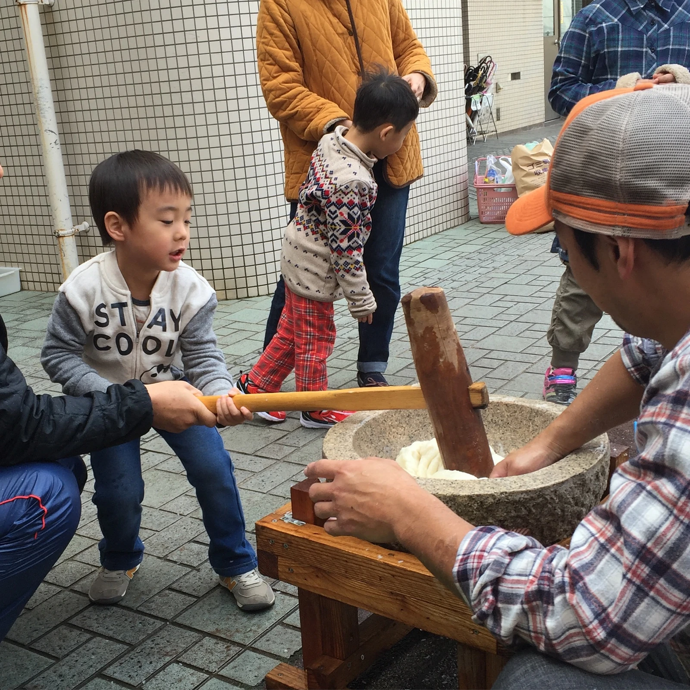
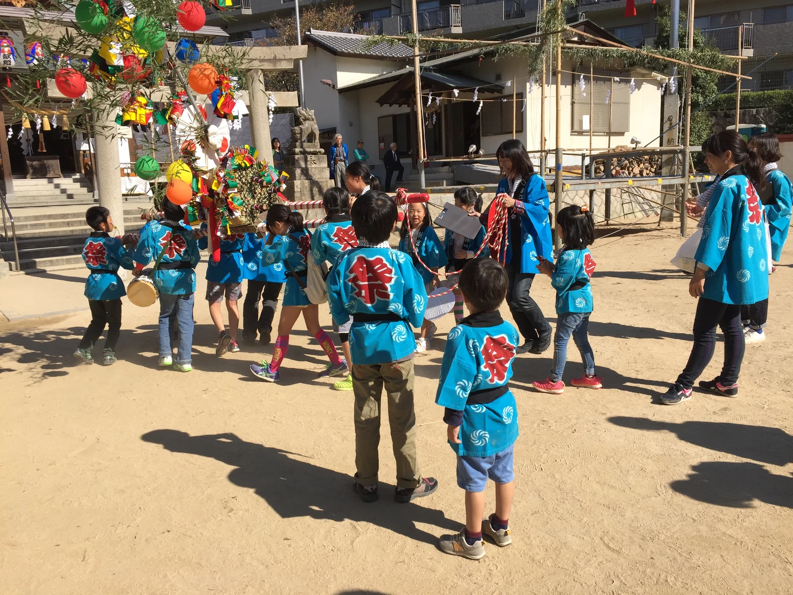
子ども会にはソフトボール・フットベースのチームも。新メンバーはいつでも募集中、体験も大歓迎。週末、グラウンドで待ってます！
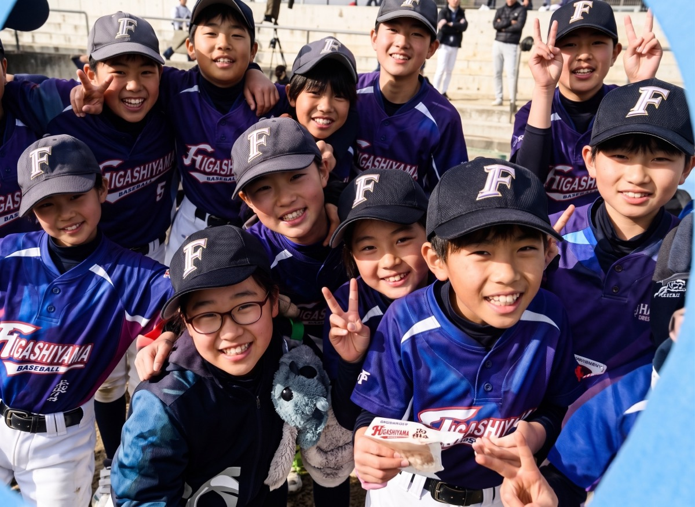
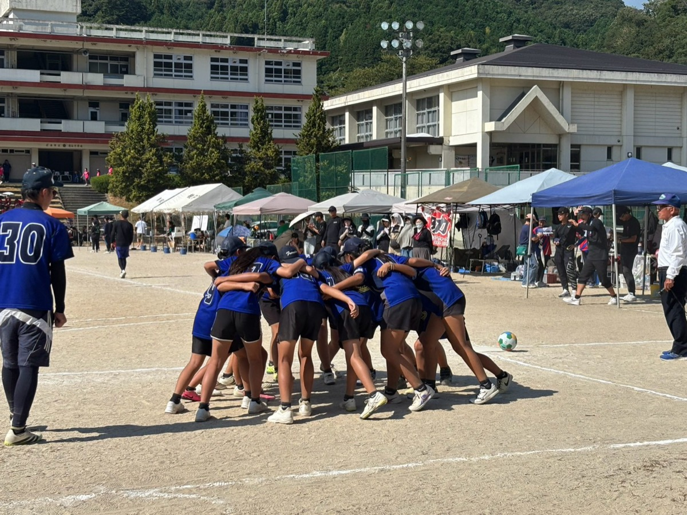
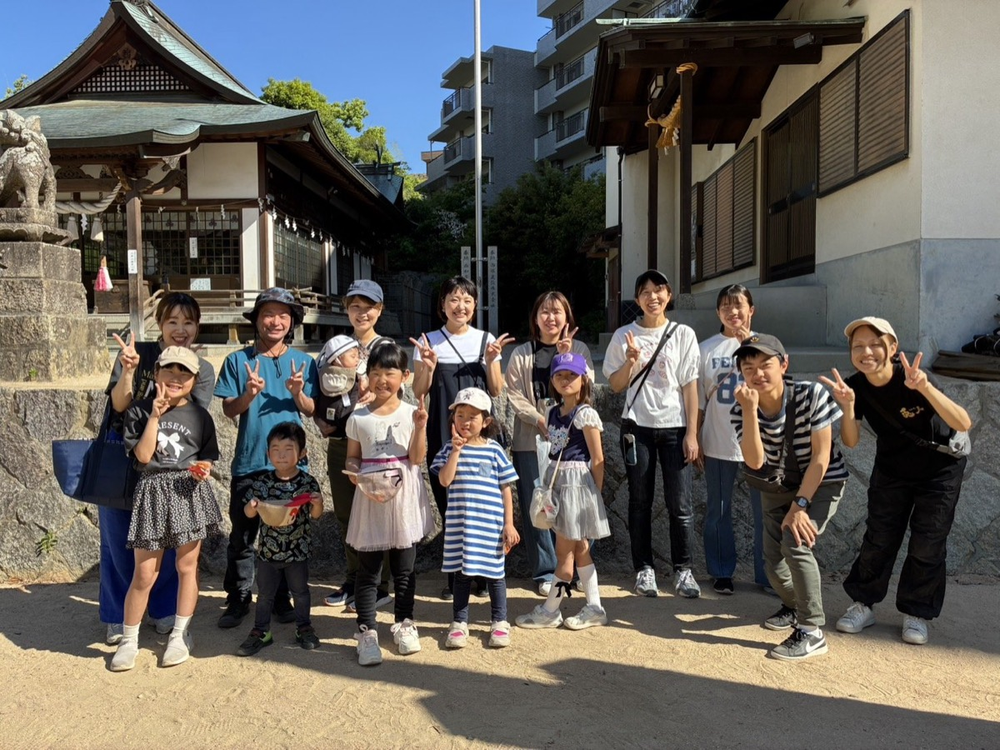
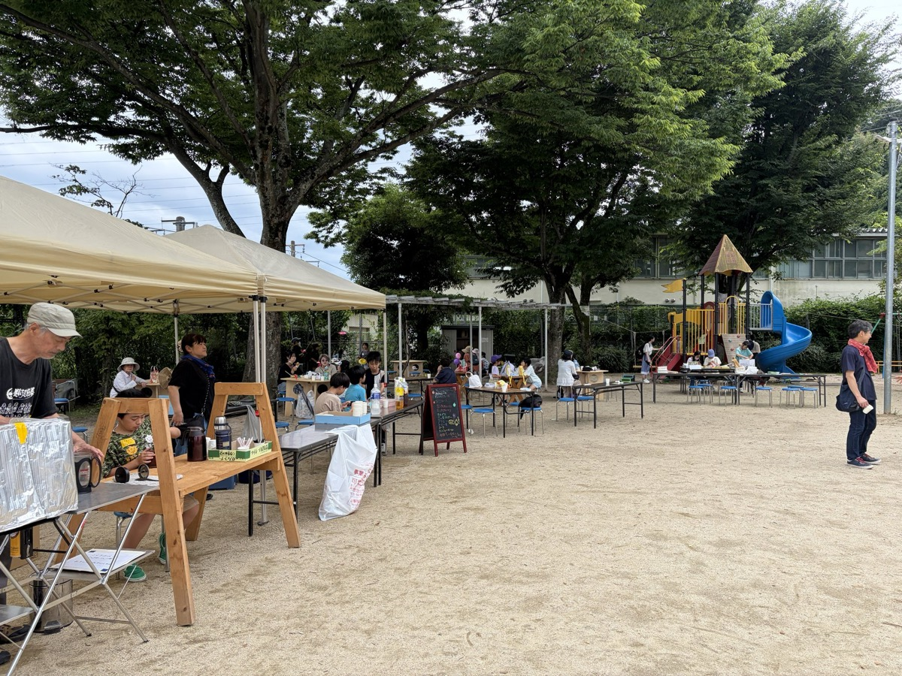
お住まいの町に子ども会がなくても、お近くの町の子ども会に参加できます。まずはお気軽に、加入フォームからどうぞ。
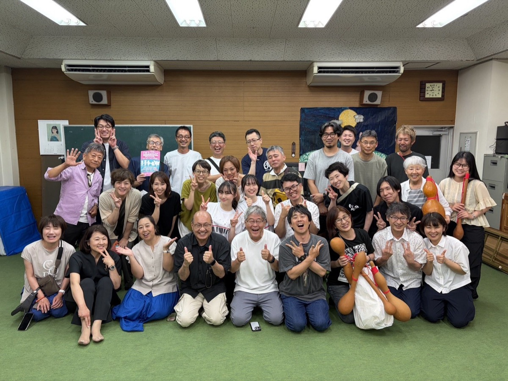
06 / SAY HELLO
町内会も子ども会も、まずはフォームから。
入力後、担当の町内会がご案内します。
下のボタンから。パソコンの方はQRコードからも。
お名前・住所・連絡先など、必要な項目を入力。
担当の町内会からご連絡します。ようこそ、古江へ!